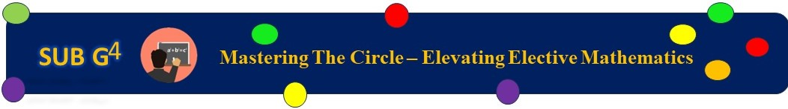

INTRODUCTION TO CIRCLE Table of content:
Properties of A CircleLines and circles are the important elementary figures in geometry. We know that a line is a locus of a point moving in a constant direction, whereas the circle is a locus of a point moving at a constant distance from some fixed point. The theoretical importance of the circle is reflected in the number of amazing applications. Here we will discuss the properties of a circle, area and circumference of a circle in detail. Circle Definition
The collection of all the points in a plane, which are at a fixed distance from a fixed point in the plane, is called a circle. Here, the fixed point is called the centre “O”. Some of the important terminologies used in the circle are as follows:
Circle PropertiesSome of the important properties of the circle are as follows:
Circle Formulas Area of a circle, A = πr² square units The circumference of a circle = 2πr units The circumference of a circle formula can also be written as πd. Where, Diameter = 2 x Radius d = 2r Video Lessons on Circle
Circle Solved ProblemsThe sample examples to find the area and circumference of a circle is given below. Example 1: Find the area and circumference of a circle having the diameter value of 10 cm. Solution: Given: Diameter, d = 10 cm We know that diameter = 2 x Radius Therefore, radius, r = d/2 r = 10/2 = 5 So, the radius is 5 cm. Area of a circle, A = πr² square units A = 3.14 x 5 x 5 Where , π = 3.14 A = 3.14 x 25 A = 78.5 cm2 Therefore, the area of a circle is 78.5 square units The circumference of a circle = 2πr units C = 2 x 3.14 x 5 C = 10 x 3.14 C = 31. 4 cm Therefore, the circumference of a circle is 31.4 units.
Example 2: A circle is cut out from a square paper of side 7 cm, if the diameter of the circle is equal to the side of the square, find how much paper is left after cutting out the circle. Solution: Side of square = 7 cm Diameter of circle = 7 cm Radius of circle = 7/2 cm Paper left after cutting out the circle = Area of square paper – Area of circle = side² (πr²) = 72– [22/7 × (7/2)2] = 49 – 38.5 = 10.5 cm2
Example 3: Find the distance covered by a wheel of radius 56 cm in 20 revolutions. Solution: Radius of wheel = 56 cm Circumference of wheel = 2πr = 2 × 22/7 × 56 = 352 cm Distance covered in 20 revolutions = 20 × 352 = 7040 cm = 70.40 m Practice / Try Questions
For more interesting information on the properties of a circle, click here for more questions & answers or click here to use The Learning App and also watch linked videos on youtube to learn with ease. Frequently Asked Questions on Properties of CircleQ1
What is the condition for the congruency of circles?If the given circles have equal radii then the circles are congruent. Q2
What is the condition for the similarity of circles?Every circle is similar to each other irrespective of its radii. Q3
What are the properties of the tangent to the circle?Following are the properties of the tangent to the circle: Q4
What is a characteristic of a circle?A circle is a geometrical figure formed by the locus of points which are equidistant to a common point called the centre of the circle, and the constant distance from the centre is called the radius of the circle.
|
|
|---|


.jpeg)
.jpeg)